英文原文：https://github.com/maptimeBoston/cartographic-design
译文：
本文是一系列有关制图设计主题基础入门知识的介绍。想获得更多进阶信息以及与之相关的更多实操资源，可以访问下面的链接进行扩展阅读。
https://github.com/maptimeBoston/cartographic-design/blob/master/resources.md
什么是地图？
问题很傻是不是？其实并不傻。这个问题是想让大家了解地图是什么以及为什么要用到地图。地图是对现实世界中某个地方的表现，通过凸显空间中不同要素之间的关系（无论是实际存在的还是需要深入感知的），来对这个地区进行符号化解译。地图反映了制图师的选择和偏见，因为地图上不会也不能够将该地的所有要素都进行表现。为了使地图更加清晰明了地进行呈现，要素必须经过筛选、简化等处理。地图可以分为两大类：参考地图和专题地图。
参考地图强调空间现象所处的位置，例如地形图或道路交通图。
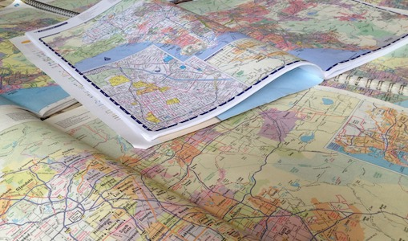
专题地图强调地理要素属性之间所呈现的空间模式，例如人口密度专题图、居民收入专题图等。专题图根据表现形式的不同又可以进一步细分为以下类别：
分级色彩图
在这类专题图中，通过使用不同的颜色来表示单元空间的数值。分级色彩图可能是最为常见并最为大家所知的一类专题地图，经常被用来表示人口统计数据或行政区域数据。
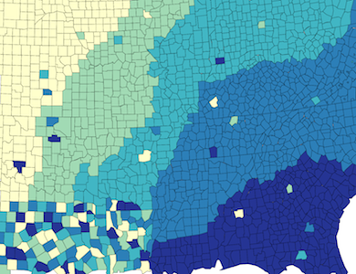
比例符号图
在这类专题图中，所使用的符号（如圆圈）与其所代表的数值成比例地缩放。 符号可能代表点数据，但使用比例符号来表示面数据也十分常见。
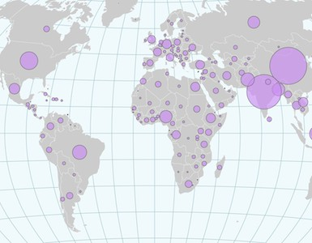
点密度图
在这类专题图中，使用点来表示地理现象的数量特征。点密度图依靠视觉上的分散来展示空间模式。 点密度图中，点可以是一对一的关系，即图中的一个点表示一个具体的事物（例如每个投票站一个点），也可以是一对多的关系，其中每个点代表一定数量的事物。
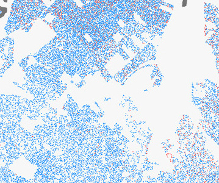
等值线图
在这类专题图中，通过对离散点进行插值来获得连续的数值。它们通常被用于表示高程或者深度，但也可以用来表示更多的专题现象，例如温度、天气、社会现象等。
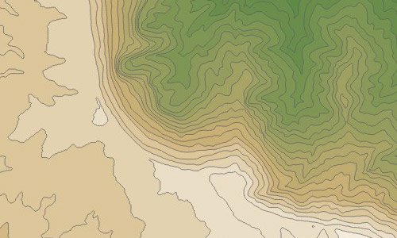
除了以上所列的类别外，还有许多其他的类型。 本文所介绍的内容主要是关于地图设计的通用主题，而不是仅限于特定类型的地图。想获取更多关于某些专题地图的介绍信息，可以访问本文开头处介绍的网址进行扩展阅读。
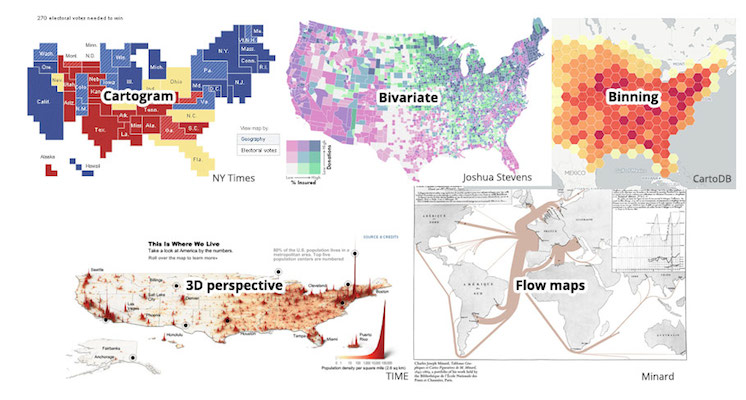
你需要地图吗？地图需要交互吗？
提前想一下你的数据或者所要讲述的故事中是否含有空间要素是很有必要的，因为如何地理位置不重要，那么地图可能就不是最好的表现形式。另外，如果是在网页展示，想想交互可以给地图带来多少增益效果，很多时候虽然你可以添加更多的交互和数据，但这并不代表这些额外的内容是必须的——它要求你投入更多的设计工作，并且可能会给读者带来潜在的困惑。
视觉变量
视觉变量是表达图形符号变化的基本方式。一些可以快速对符号进行视觉上的分组：如，符号很容易按色彩分组，而不是形状；一些是自然有序的，比如尺寸和明度。你制图的数据是否是有序的（或者是定量的）？这些数据需要强调吗？注意在符号化中使用适当的视觉变量。
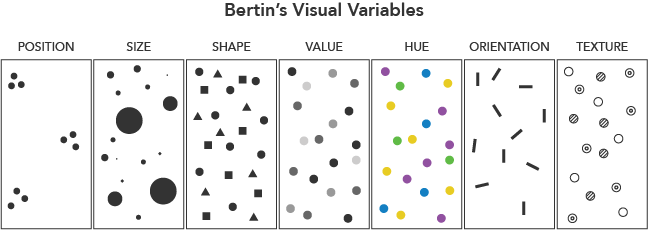
Jacques Bertin 在《图形符号学》（1967）中提出的7种“视觉变量”（位置、尺寸、形状、明度、色彩、方向、纹理），后来制图学家对其进行了扩充
视觉层次
良好的视觉层次对地图设计的整体效果至关重要。视觉层次结构使得有些内容看起来更加突出和重要，而其他内容是次要的。视觉层次结构应该与你构图的思维层次相匹配——从概念上讲，地图中最重要的内容就应该被强调。视觉层次结构依赖于图形-背景关系，强调的是“图形”，模糊的是“背景”（想想照片中的前景和背景）。关键在于形成对比，一般来说，更大更深的内容应该作为前景。
尝试模糊测试，退远看或眯眼看使地图模糊化，看那些要点是否还突出？
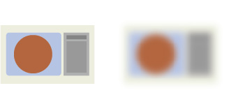
色彩
色彩是良好地图设计的重要组成部分，虽然完全掌握色彩需要设计师的慧眼和经验，但是有一些通用的要点，如下：
- 遵循制图惯例：蓝色表示水，等等。
- 避免红绿配色，因为色盲无法辨别。
- 看你的色调是否有关联，以及你的内容是否有关联。如果两个内容没有关联，最好用不同的色调。
- 多注意细节！在你的层次结构中对重要内容使用一些夸张的色彩。
- 当使用渐变色时，试着限制在6-8种颜色或明暗之内。超过这个范围，人眼难以区分。
对于分级色彩图，使用色带更合适。如果你的数据是无序的，就用离散型配色方案；如果数据在一个维度上有序，就用连续型配色方案（并不是彩虹主题）；如果数据有序并且可在有意义的断点上下划分，就用极端型配色方案。
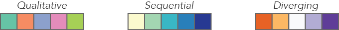
- Qualitative：离散型，彼此差异明显的颜色，通常用来标记分类数据。
- Sequential：连续型，颜色渐变。
- Diverging：极端型，深色强调两端、浅色表示中部的颜色，可用来标注数据中的离群点。
分类和归一化
大多数分级色彩图需要使用一种分类方法将数据值进行分组归类，理想的是3-7类。这使阅读地图变得更容易——但是不同的分类方法会产生极其不同的成图效果，各自都有优缺点，需要选择一种既容易理解又能阐明数据真实原型的方法。下面是几种常用方法：
- 相等间隔：将数值范围等值划分。（相等间隔分类适用于常见的数据范围，如百分比和温度。）
- 分位数（等数量）：每个类都含有相等数量的数据值。（分位数分类非常适用于呈线性分布的数据。分位数为每个类分配相等数量的数据值，不存在空类，也不存在值过多或过少的类。）
- 自然间断点分级：基于自然分组，最大化类内的相似性和类间的差异性（即类内差异最小,类间差异最大）。（自然间断点不适用于比较使用不同基础信息构建的多个地图。）
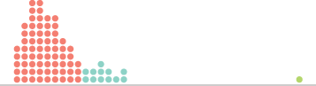
按相等间隔划分4类，第3类没有任何值
按数量分类，最后的异常值真的属于其他绿色吗？
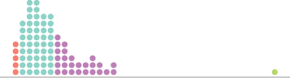
自然间断点分类，看起来不错，但很难理解
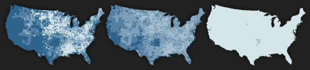
完全相同的数据，不同的分类方法，不同的成图效果。John Nelson提供的例子
分级色彩图也应该归一化，即映射为某种比例而不是原始数量。你可以看看下面这几张热力图（图片来源：http://xkcd.com/1138/），基本上是基于人口密度制作的。另外，区域的相对大小会影响对值的视觉解译。例如，人口密度或人均GDP比人口数量或GDP总量更有意义。
地图投影
在平面的地图上展现曲面的地球（即投影到地图上），必然会产生扭曲。在地图投影过程中，我们可以保持局部的角度（大体的形状）、大小、方向或者距离不变，但无法同时保持以上特征不变。从地图设计的角度，需要考虑以下几点：
- 投影方式是否适合地图的类型及制图的目的？
- 地图的覆盖范围有多大？
- 投影效果合适么？能够识别图中的地理要素么？
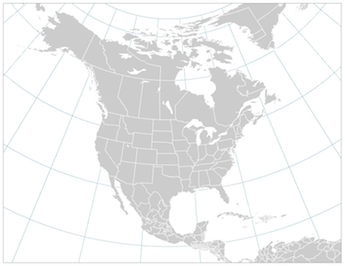
分级色彩图与点密度图应该使用等面积投影，比如在大洲级的地图中使用亚尔勃斯(Albers)等积圆锥投影（上图），或者是在世界地图中使用摩尔维特(Mollweide)伪圆柱等积投影。所以尺寸扭曲不会导致我们误解数据值。
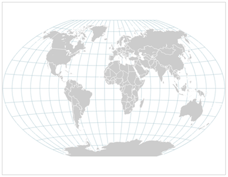
任意投影例如温克尔三重(Winkel Tripel)投影（上图）或者罗宾森(Robinson)投影被设计出来用于产生一种我们熟悉的，不那么扭曲的地图。尽管它们每一个特征都不完美，但这样的世界地图整体看上去很舒服。
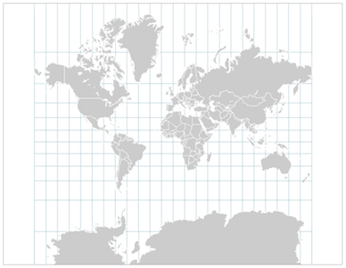
墨卡托(Mercator)正轴等角圆柱投影是最为广泛的投影方式（几乎大部分网络地图都采用这种投影），这种投影保留了每一处的角度相等但在全球尺度上会造成严重的形状扭曲。它适用于在城市或者航海中的导航，但不适合用于专题地图。
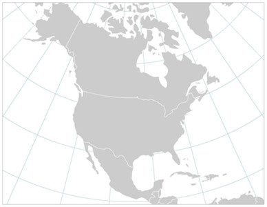
兰勃特(Lambert)等角圆锥投影是在北美或者相似纬度地区常用的投影。它在某种意义上保留了地物的形状，使之看起来“正确”和熟悉。
文字与注记
文字可以通过其含义传递信息，但文字的特征也蕴含了一定喻意。地图中的文字不仅仅存在于注记，还出现在补充信息中，例如图例、数据来源甚至额外的文字框。不要认为任何你使用的字体都能被合理的印刷出来。对字体、风格等的选择会对地图的清晰度、含义和色调产生强烈的影响。
- 保持一致。一个好的法则是选择两种字体：一种衬线字体和一种无衬线字体。
- 以不同的权重、样式对信息进行编码（粗体、斜体、常规、纤细等）。
- 使用与文字有关的视觉和认知法则。让重要的信息更大而突出，不重要的信息小且纤细（直至从图中删去）。
- 使用衬线字体标示自然要素（例如水体）是一种惯例，水系的标注通常用斜体标示。
假想的一种标签样式和层次结构。大面积地物的注记通常用更大的字间距（使注记覆盖整个区域）
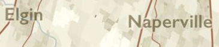
注记周围的遮罩或光晕可以提高其与背景的对比度，使易读性更强。（Daniel Huffman提供的例子）
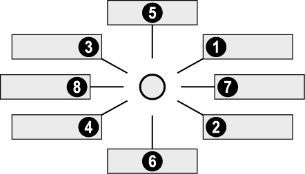
在点要素上放置注记的优先顺序。（扩展阅读https://github.com/maptimeBoston/cartographic-design）
地图尺度与制图综合
从地图学的核心而言，它是一种对地球的抽象。我们不会单纯的画出所有原始数据，更多的是通过各种方式使之清晰，通常而言，是删除一些不重要的东西。之所以这么做的最主要原因就是相比较于真实的世界，地图的尺寸是非常小的，所以绝不可能在地图中呈现所有的小细节。数据和图形都需要根据地图的尺度进行适当的综合：大比例尺的地图（“放大”的地图）可以保留更多的细节。典型的综合手段包括：
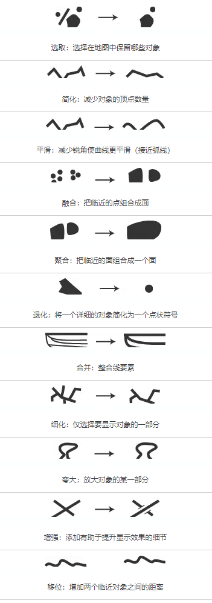
更多资源
想要了解与此主题相关的更多信息和实用工具，可以访问
https://github.com/maptimeBoston/cartographic-design/blob/master/resources.md进行扩展阅读。
关于GISer入门
本文是知识星球GISer入门密友们（当然也包括我啦！）的翻译的第一篇文章。
@张云金_GISer：GIS不只是只有 ArcGIS,还有众多好玩的 GIS产品……10年 GIS老鸟带你以不一样的视角入门 GIS,学习主流 GIS软件。请使用微信扫描二维码加入星球！
原文链接：当你进行地图设计时，需要了解这些小知识